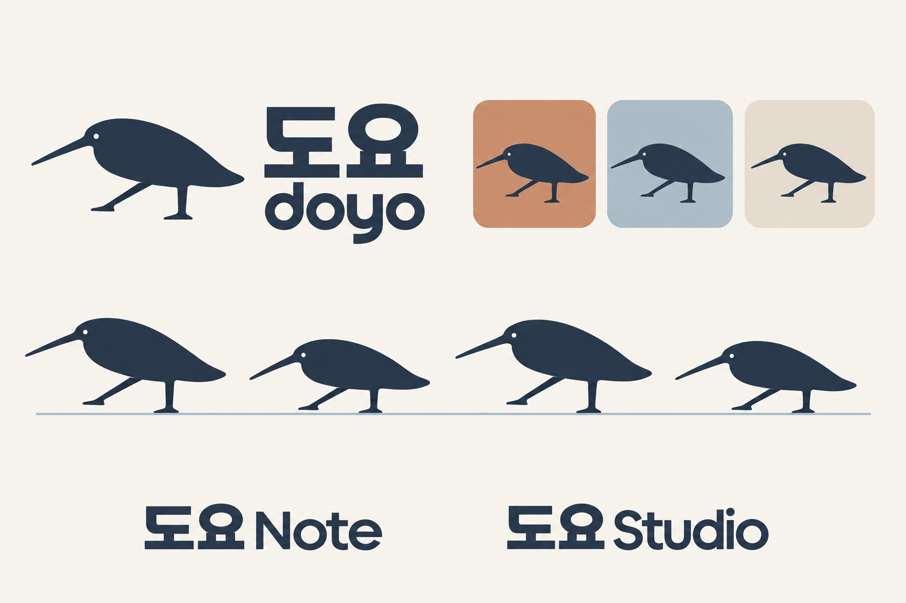
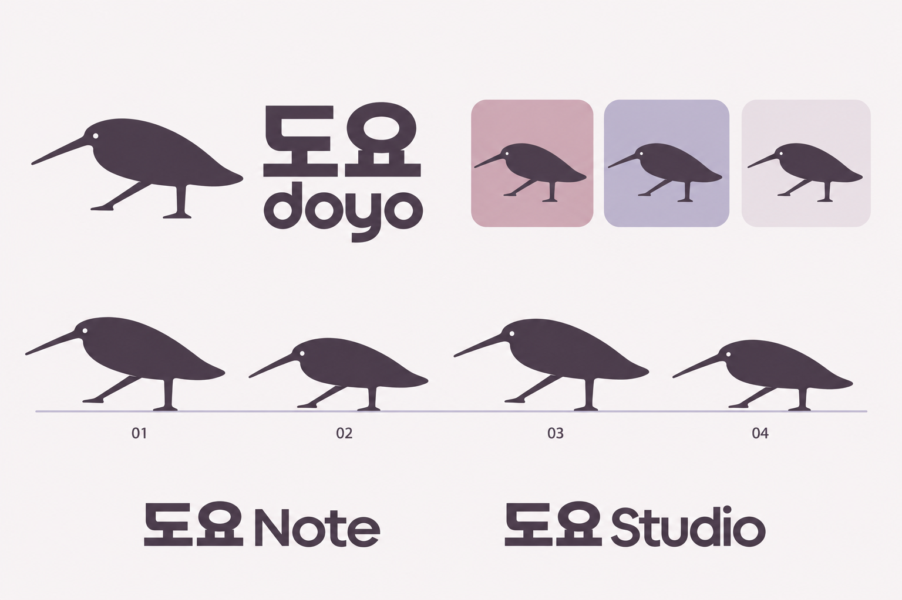

도요 / doyo · 2026-10-22 · 선택 A · 브랜드 탐색
코코아와 블루그레이.
리듬을 타는 단색의 새. 따뜻한 바탕과 차분한 청색을 함께 쓴다. 사용자가 선택한 A를 기준 팔레트로 정리했다.

역할을 가진 여섯 색
- 코코아
#3E332F새 · 워드마크 · 본문 - 블루그레이
#A8BECC대표 아이콘 배경 - 종이색
#F7F4EF기본 화면 - 모래색
#DCC5B0보조 배경 - 밝은 중간색
#E8E0D5카드 · 구획 - 짙은 청색
#486879버튼 · 링크
악보 도구에 적용하면
색의 역할을 보기 위한 정적 예시다. 악보 지면은 흰색·검정으로 유지하고, 도구막대와 행동에 브랜드 색을 쓴다. 다크 조합은 선택안에서 파생한 검토용 제안이다.
도요 Note
연습 이어가기
48마디 · 72 BPM
악보 지면
연습 시작연습 기록 보기
종이색 #F7F4EF · 본문 #3E332F
도요 Studio
작업 이어가기
최근 편집한 악보
악보 지면
악보 열기최근 작업 보기
바탕 #24211F · 본문 #F1ECE5
지정한 조합의 대비
기본 본문 / 종이색: 11.13:1
대표 아이콘 / 배경: 6.34:1
밝은 버튼 글자 / 행동색: 5.95:1
행동색 글자 / 종이색: 5.42:1
다크 본문 / 배경: 13.62:1
다크 버튼 글자 / 배경: 9.67:1
다크 링크 / 배경: 9.67:1
일반 본문 기준 4.5:1과 비교한 값이다. 특정 색상 쌍의 계산 결과이며 전체 화면 접근성 인증은 아니다. 상태는 색과 함께 문구·형태로 표시한다. W3C 대비 기준 · 색상 사용 기준
배너

비교했던 B · C 보기


기본 image_gen으로 제작한 브랜드 탐색 이미지. 제품 미적용. 제작 프롬프트